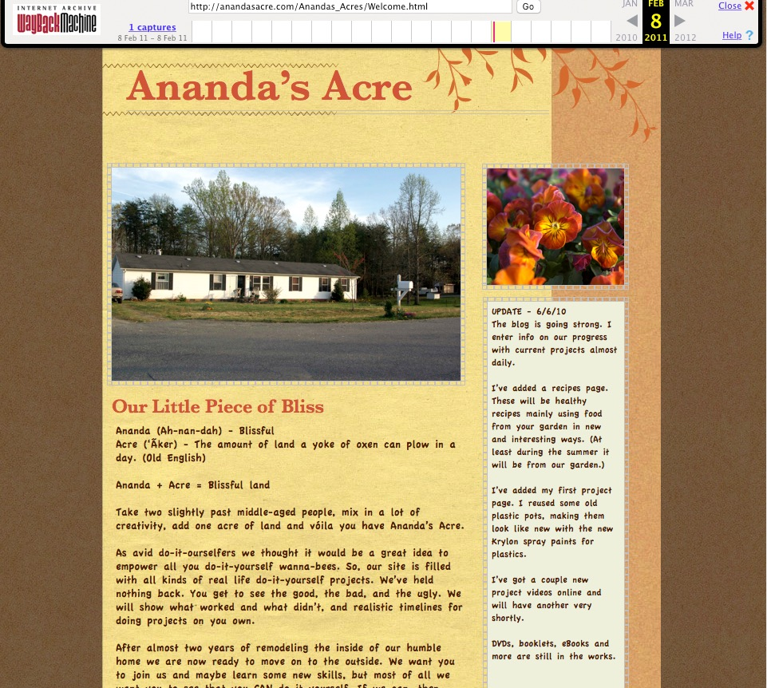
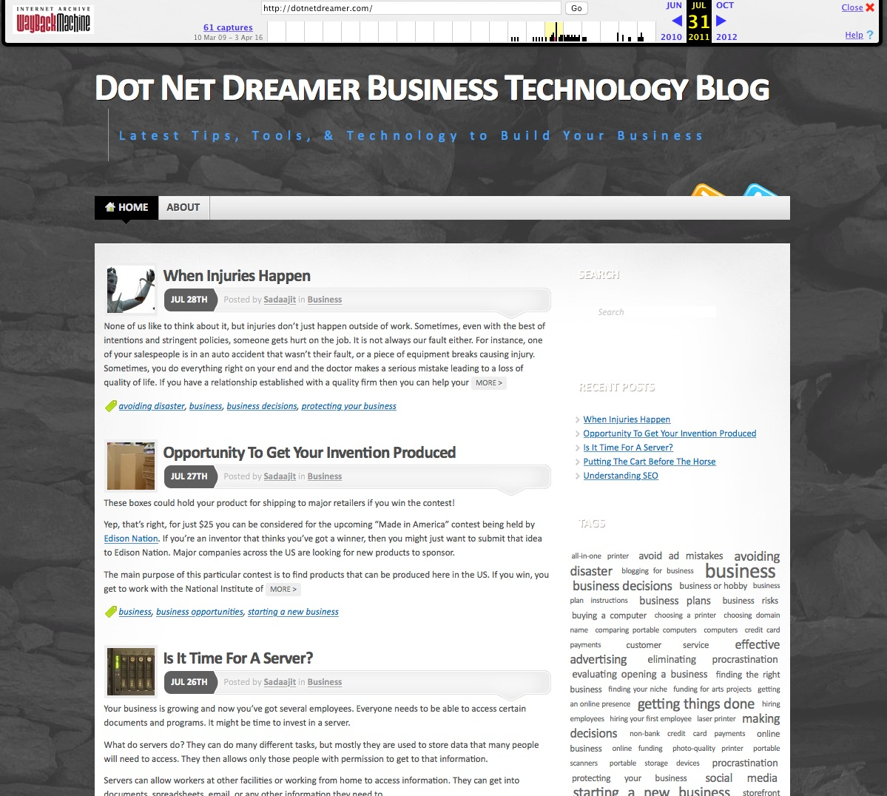
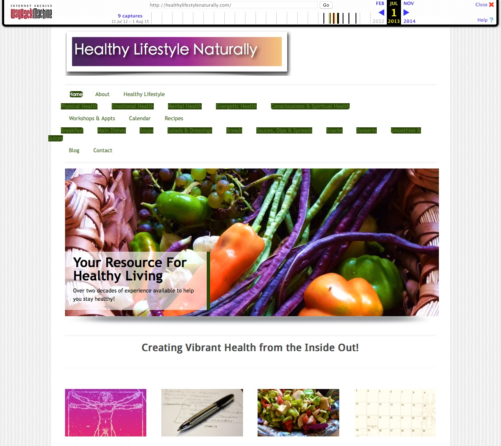
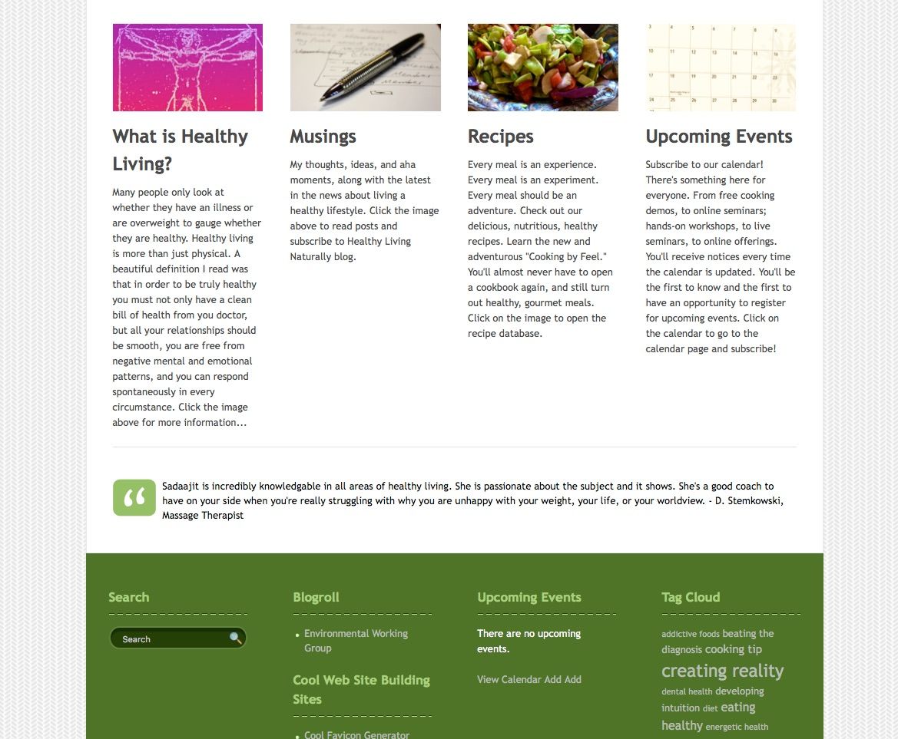

Over the years I have created and maintained ten web sites. All, but the very first two sites, were done using WordPress. At one time I had six sites running simultaneously. All of them were blog sites. I also created two commercial sites for small businesses I opened. Triad Whispering Winds is still up. Information on this site is on my Current Websites Page.
Dancing Leaves Studio was my very first site. It was for my budding fabrics arts business and was created in Dreamweaver.
My second site was Ananda’s Acre. It was a blog site about our property and was geared to reach the DIY audience. It was created in iWeb.
Below is a listing of the WordPress sites I have created and maintained.
- healthylifestylenaturally.com - web site for natural health care business
- greenavalon.com - gardening blog
- 5lemons.com - healthy eating blog
- vagabondchronicles.com - travel blog
- dotnetdreamer.com - technology blog
- thenextfresh.com - health and wellness blog
- nobetterhigh.com - music and arts related blog
Below are some grabs from Wayback Machine. These give an idea of the look and feel of the sites I created. Unfortunately only a few sites were still available.
Ananda's Acre
{kind=link}
Ananda’s Acre, as mentioned, was the second site I created. I was very interested in sharing with others the trials and tribulations, triumphs and successes we had as we moved onto a one acre piece of land. At one time it had a photo gallery of the interior remodeling we had done, as well as blog posts relating what we did. I also shared some videos on small projects and gardening.
Dot Net Dreamer
{kind=link}
Dot New Dreamer Blog was created during a foray into blogging for pay. I customized a template with the photo in the background. I was looking for the feel of solidity and foundation that a business needs. I wrote all the blogs, located all the photos and did any editing needed. Some of the posts were for pay and included whatever requirements the company had for links, photos, or other inclusions in the blog.
Healthy Lifestyle Naturally
 {kind=link}
{kind=link}
Healthy Lifestyle Naturally was a site promoting healthy natural living (obviously). Again a WordPress template was used. I created the logo and edited all the photos included in the site. The header photo was taken by me, as are a number for photos on all my sites.
Unfortunately the WayBack capture has some problems, that weren’t apparent in the active site. The menu section is incorrectly represented.